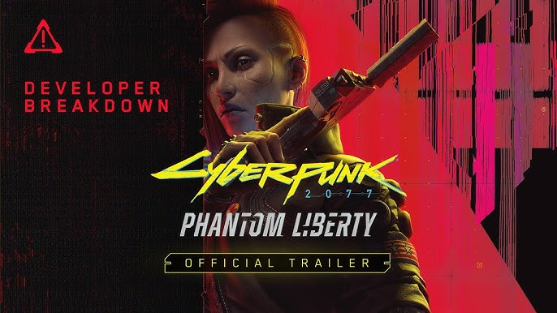

Starfield
Starfield es un videojuego de rol, acción y exploración de Bethesda Game Studios, autores de The Elder Scrolls y los últimos episodios de la saga Fallout, que lleva su acción a un ambiente futurista en lo que supone el primer universo nuevo del estudio en 25 años. El exclusivo de Microsoft se presenta como un RPG de próxima generación ambientado entre las estrellas, que permite al usuario crear el personaje que desee y explorar el firmamento con una libertad sin precedentes mientras se embarcas en un viaje épico para desentrañar el mayor misterio de la humanidad. En el año 2330, la humanidad se ha aventurado a ir más allá de nuestro sistema solar, colonizando nuestros planetas, viviendo como viajeros del espacio. Desde humildes inicios como minero espacial, el jugador ha de unirse a Constellation, —el último grupo de exploradores espaciales en busca de artefactos únicos a través de la galaxia— y explorarás la inmensa extensión de los Sistemas asentados el juego más grande y ambicioso de Bethesda Games Studios, con más de mil planetas para recorrer, combates entre las estrellas y grandes dosis de personalización. Este RPG intergaláctico tenía previsto su lanzamiento para 2022 en PC y Xbox Series X|S, pero pero tuvo que posponer su estreno hasta el 6 de septiembre de 2023.

Super Mario Bros. Wonder
Super Mario Bros. Wonder es un videojuego de acción y plataformas en 2D que busca ser el siguiente paso en la evolución de la franquicia en desplazamiento lateral. Cuando los jugadores toquen una Flor Maravilla en el juego, ocurrirán auténticos portentos: las tuberías cobrarán vida, aparecerán montones de enemigos e incluso los personajes cambiarán de apariencia, lo que transformará por completo y de forma totalmente inesperada la manera de jugar. Cada nivel cuenta con sorpresas muy emocionantes, y se prometen novedades, tales como un nuevo potenciador que nos convierte en elefante.

Star Wars Outlaws
Star Wars Outlaws es un videojuego de acción y aventura en mundo abierto que nos desafía a convertirnos en la forajida más buscada de la galaxia. Star Wars Outlaws invita a sus jugadores a disfrutar de la galaxia de Star Wars como nunca antes, en una historia original ambientada entre Star Wars: El imperio contraataca y Star Wars: El retorno del Jedi. Los fans se pondrán en la piel de la astuta delincuente Kay Vess (interpretada por Humberly González), a quien acompaña su leal Nix (interpretado por Dee Bradley Baker, de Star Wars: La remesa mala), para dar uno de los mayores golpes que haya visto el Borde Exterior.
Cyberpunk 2077: Phantom Liberty
Phantom Liberty es la primera gran expansión de Cyberpunk 2077, el RPG de acción-shooter y temática futurista de CD Projekt RED, creadores de The Witcher 3. Entre sus detalles se presenta una historia de intriga y espionaje ambientada en un distrito totalmente nuevo de Night City.